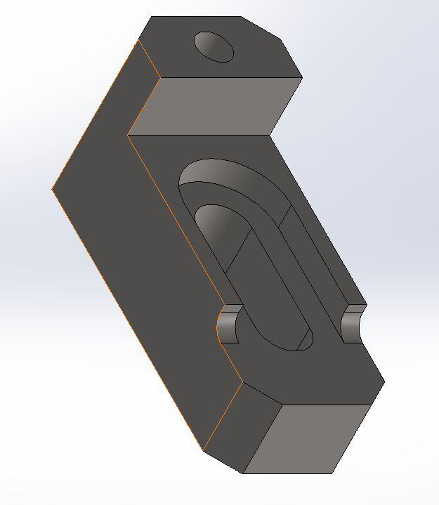
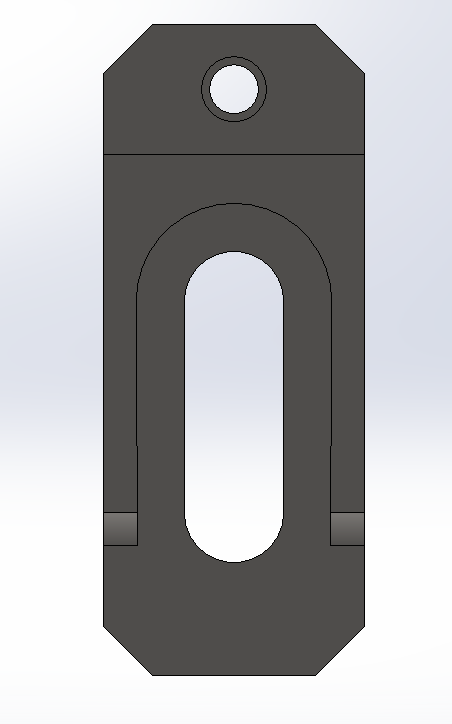
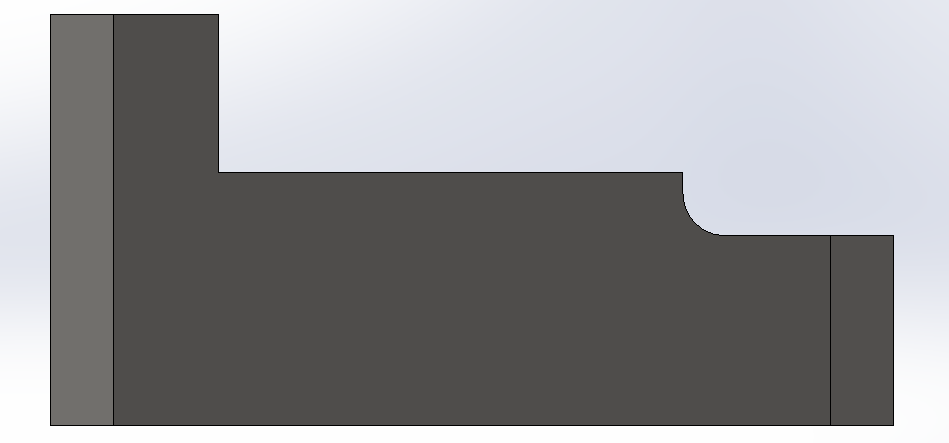
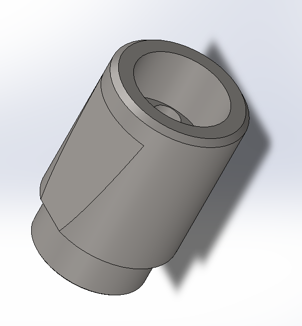
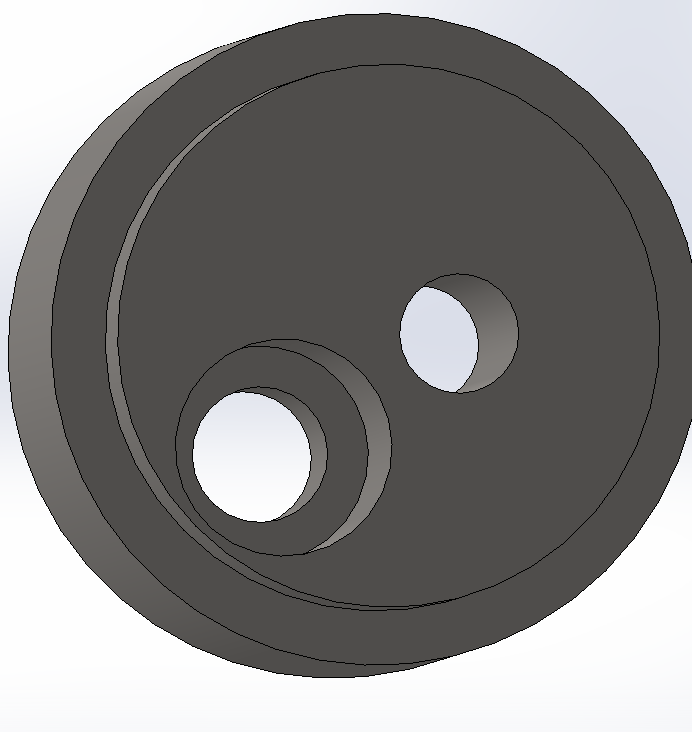
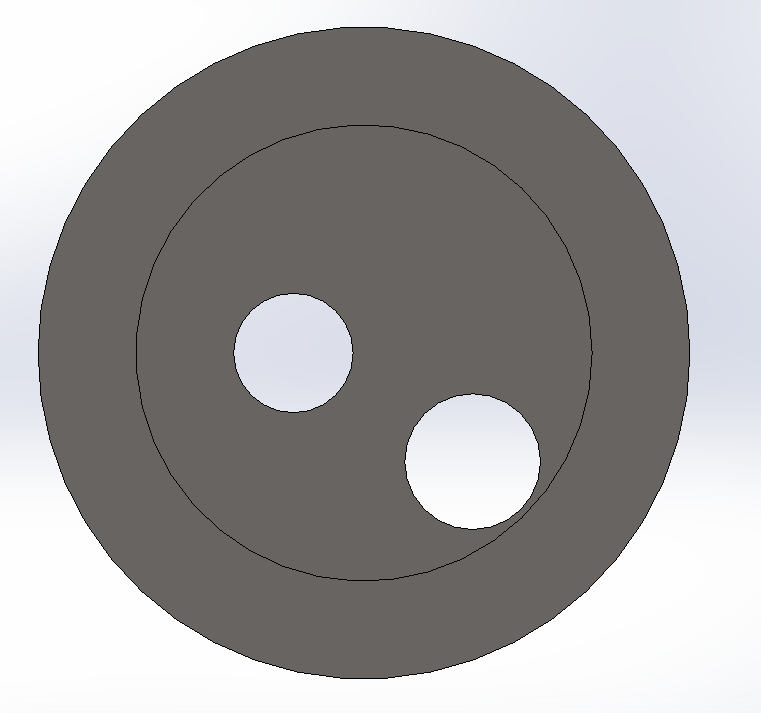
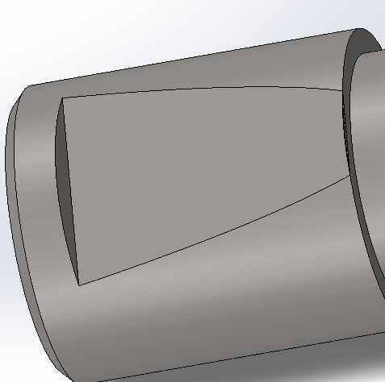
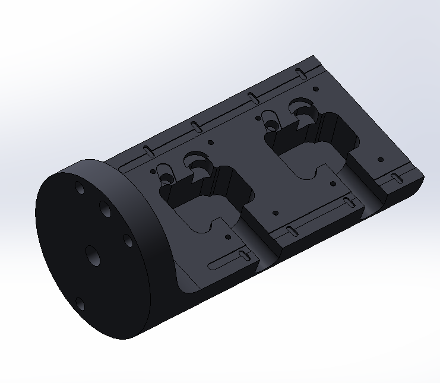

CAD/CAM on Various Machined Pieces
Design-to-manufacture workflow for three precision parts, completed during a machining internship at METechnics, an aerospace and automotive parts supplier.
- Clamp
- Cylinder
- Column
- 3-Axis & 5-Axis Milling
- SolidWorks
- SolidWorks CAM
Designed and prepared full CNC machining programs for three functional parts, a clamp, an anti-vibration cylinder, and a guide column, starting from reference control drawings and modelling each one in SolidWorks to be compatible with the machines available in the shop. For each part, I built the complete machining sequence: selecting tools, calculating spindle speed and feed rate from cutting-parameter tables, and defining workholding (V-blocks, clamps, isostatic positioning). Toolpaths were generated and simulated in SolidWorks CAM before exporting G-code for the shop's Matsuura RA-II (3-axis), Nakamura-Tome TMC-20 (turning), and DMU 50 Evolution (5-axis) machining centers. For the more complex parts, I compared 3-axis and 5-axis strategies directly, the 5-axis rotary table cut the anti-vibrator's process from 3 setups down to 2, and the column's from 4 down to 2, by reorienting the part without unclamping it between operations.
Key methods
Clamp



Anti-Vibration Cylinder




Guide Column

Internship context
Completed as a machining internship at METechnics (Manuf Engineering Technics), a Tunis-based manufacturer serving aerospace and automotive clients including Airbus and Safran. Supervised by Mrs Debbi Aalia and Mr Naimi Iheb.